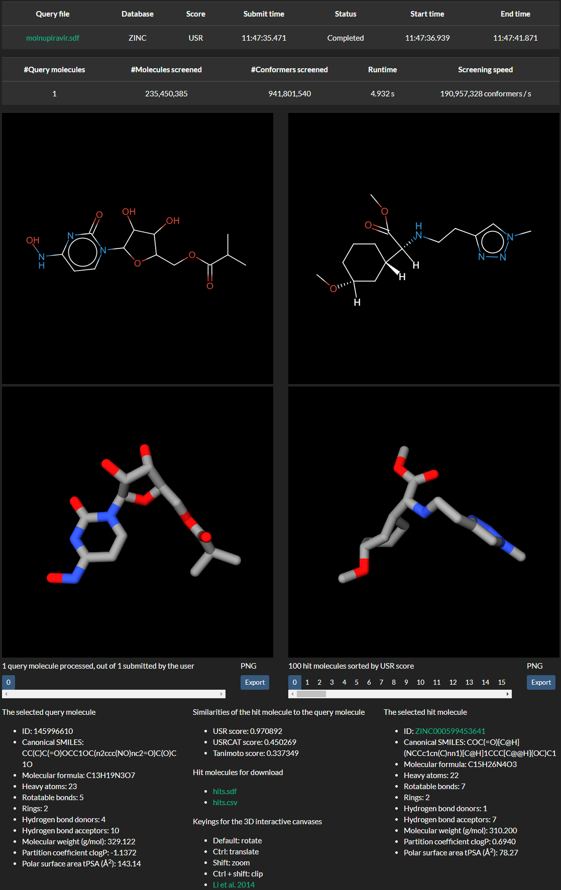

What are jstar, USR-VS, USR and USRCAT
jstar, an update to USR-VS (Li et al. 2016), is the first free and open source webserver permitting prospectively screening billions of 3D compound conformers in real time. In just 5 seconds, nearly 1 billion 3D conformers generated from 235 million compounds are screened, leading to a formidable speed of 190 million conformers per second. jstar is powered by an optimized and parallel implementation of two retrospectively validated ligand-based 3D similarity methods, USR (Ballester et al. 2007, Ballester et al. 2011) and USRCAT (Schreyer et al. 2012), which can bias the search toward active molecules with innovative chemical scaffolds, thus enabling scaffold hopping. Moreover, USR has also been prospectively validated in vitro (Hoeger et al. 2014, Patil et al. 2014, Teo et al. 2013, Ballester et al. 2012, Ballester et al. 2010, Li et al. 2009).
USR compares the 3D shape of two molecules, whereas USRCAT compares not only the 3D shape but also the spatial distribution of atom types relevant for molecular recognition (aromatic, hydrogen bond donor, hydrogen bond acceptor and hydrophobic atoms). Both methods are invariant to spatial rotation and translation, so they do not require structural alignment to operate. The 100 database molecules most similar to each of the query molecules are returned and only these hits are aligned to their corresponding query molecule for better visual comparison. The similarity score between a query molecule and a hit molecule is normalized to (0, 1], with 1 being the maximum similarity and 0 being the minimum similarity.
How to run a virtual screen
To run a virtual screen, only four simple steps are required, as illustrated in Figure 1:
- select a SDF file specifying the 3D geometry of some query molecules
- select a third-party compound database to screen (ZINC by default)
- select either USR or USRCAT as the ranking score (USR by default)
- press the submit button
Figure 1: Running a virtual screen by following four simple steps.
Where to obtain a 3D SDF file
There are a small number of public databases where users can obtain a SDF file of the 3D conformer of the desired molecule to be used as query molecule:
- PubChem. An example is molnupiravir (CID: 145996610). Under the 3D Conformer tab, click the Download button and then click the Save button next to SDF.
- ChemSpider. An example is remdesivir (ID: 58827832). Below the image of the structure, click the 3D button and then click the Save button to the left.
There are a large number of public databases where users can obtain a SMILES string of the desired query molecule, including the databases above and below:
- ChEMBL. An example is vemurafenib (ID: 1229517). Its SMILES is shown under the Representations tab.
- ZINC. An example is fluspirilene (ID: 537755). Its SMILES is shown below the Mol Formula column.
With a SMILES string at hand, users may generate an energy-minimized 3D conformer on the fly at USR-VS.
How to interpret the result
Once a virtual screen is submitted, the user will be redirected to the result webpage with a unique URL that is only available to the user. Users are suggested to bookmark the result webpage if they want to browse the result at a later time. The submitted virtual screens from all users are first queued and then executed on a first-come-first-served basis.
Figure 2 shows the result webpage of selecting molnupiravir.sdf as the query molecule, ZINC as the screening database and USR as the ranking score. Two tables at the top display the input settings, current status, key timepoints, and processing details of the virtual screen. The query filename is truncated to 20 characters. The submit time, start time and end time are in millisecond precision. The status can be either Queued, Executing, or Completed. #Query molecules is the number of query molecules actually processed, depending on the final output file size, which is limited to 16MB by MongoDB. #Molecules screened and #Conformers screened are the number of compounds and 3D conformers, respectively, of the selected database. Multiplying #Conformers screened by #Query molecules gives the total number of conformers actually screened. The runtime is calculated via subtracting the end time by the start time. It includes the time spent in reading the query molecules, calculating their feature vectors, enumerating the precalculated feature vectors of database compounds in parallel, calculating the score of two feature vectors, ranking the database compounds, and aligning the top hits to the query. The screening speed is calculated via dividing the total number of screened conformers by the runtime. It could reach 190M conformers per second for large databases like ZINC, but could drop to 12K conformers per second for small databases like WITHDRAWN.
Figure 2: Visualizing the query (left) and hit molecules (right). By pressing he numbered buttons below the 3D canvases, the user can select different top hits for visualization. In this case, the most similar hit (number 0) has a high USR score of 0.970892 but a low Tanimoto score of 0.337349, suggesting that it has a similar shape but different chemical scaffold to the query molecule, implying possibly scaffold hopping.
When the virtual screen is completed, the top 100 most similar hit molecules to the query molecules and their similarity scores can be downloaded in both SDF and CSV formats (hits.sdf and hits.csv). Regardless of the selection of the ranking score, both USR and USRCAT similarities are calculated for the top hits. In addition, 2D Tanimoto similarity using Morgan fingerprint with a radius of 2 is also calculated, with the maximum score of 1 indicating identical molecules. This score is not only useful to detect identical molecules, but also to quantify the degree of dissimilarity between the chemical structures of the query molecule and hit molecule, which is indicative of chemical scaffold hopping.
By using the 2D SmilesDrawer (Probst et al. 2018) and the 3D WebGL visualizer iview (Li et al. 2014), the query molecule is shown in the left canvases, and the hit molecules are shown in the right canvases. Although neither USR nor USRCAT requires alignments of the query molecule against each database molecule, the hit molecules are roughly aligned to the query molecule using the four reference points as an atom mapping to facilitate their interactive inspection by the user. The user can switch among the top 100 hit molecules (numbered from 0 to 99) by pressing the button below the right canvases, and interactively translate, rotate and zoom in/out the 3D structure of the selected hit molecule to match the orientation of the query molecule if needed. The latter permits to assess the degree of 3D similarity of both molecules. Likewise, the user can switch among the processed query molecules by pressing the button below the left canvases.
Also displayed are USR, USRCAT and Tanimoto scores, chemical properties, and a link to the third-party webpage to purchase the hit molecule. This stage is intended to help the user decide which hits to purchase and how to purchase them to experimentally measure their activity against selected targets of the query molecule. Note that these targets can be both molecular (e.g. a protein of a known pathway) and non-molecular (e.g. a cancer cell line).
References
Webservers: Li et al. 2016
Algorithms: Schreyer et al. 2012, Ballester et al. 2011, Ballester et al. 2007
Applications: Hoeger et al. 2014, Patil et al. 2014, Teo et al. 2013, Ballester et al. 2012, Ballester et al. 2010, Li et al. 2009